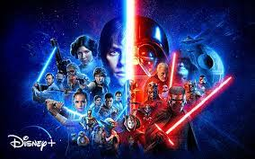
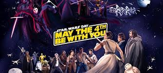

História
Star Wars (Guerra nas Estrelas) é uma franquia do tipo space opera estadunidense criada pelo cineasta George Lucas, que conta com uma série de nove filmes de fantasia científica e dois spin-offs.[1] O primeiro filme foi lançado apenas com o título Star Wars,[2] em 25 de maio de 1977, e tornou-se um fenômeno mundial inesperado de cultura popular,[3] sendo responsável pelo início da "era dos blockbusters", que são superproduções cinematográficas que fazem sucesso nas bilheterias e viram franquias com brinquedos, jogos, livros, etc. Foi seguido por duas sequências, O Império Contra-Ataca e O Retorno de Jedi, lançadas com intervalos de três anos, formando a trilogia original,[4][5] que segue o trio icônico formado por Luke Skywalker, Han Solo e Princesa Leia, que luta pela Aliança Rebelde para derrubar o tirano Império Galáctico; paralelamente ocorre a jornada de Luke para se tornar um cavaleiro Jedi e a luta contra Darth Vader, um ex-Jedi que sucumbiu ao Lado Sombrio da Força e ao Imperador.
Jedi e Sith
Os Cavaleiros Jedi são uma ordem de indivíduos que tinham a habilidade de tocar e trabalhar em conjunto com a Força, afastando seu Lado Sombrio. A ordem começou dezenas de milhares de anos antes da ascensão do Império Galáctico. O planeta de origem da Ordem Jedi é Tython, localizado no Núcleo Profundo. Os videntes de Tython conheciam a Força como Ashla, mas entendiam, esse campo de energia, de modo muito parecido como os Jedi. Contudo, os videntes que usaram sua habilidade a serviço do ódio e da cobiça passaram para o lado sombrio. As Guerras da Força de Tython foram os primeiros conflitos entre o lado luminoso e o lado sombrio.
